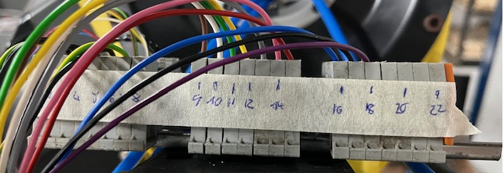
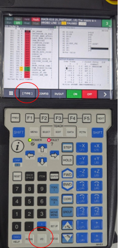
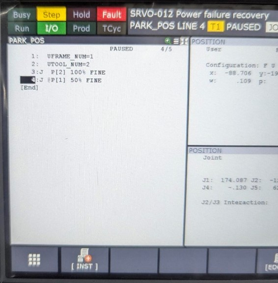
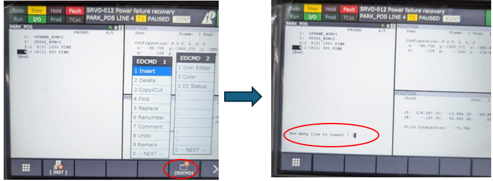
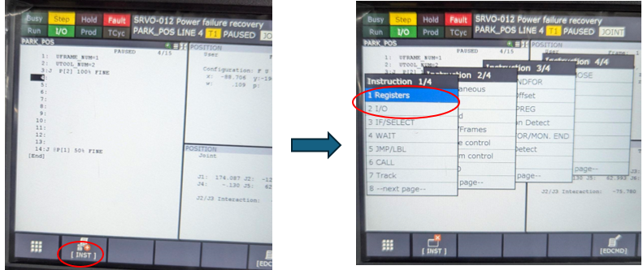
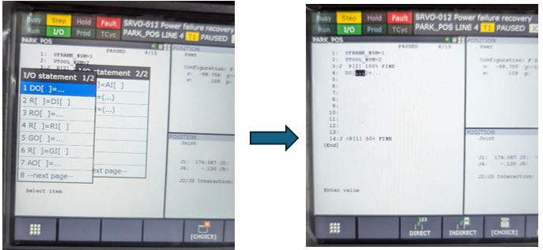
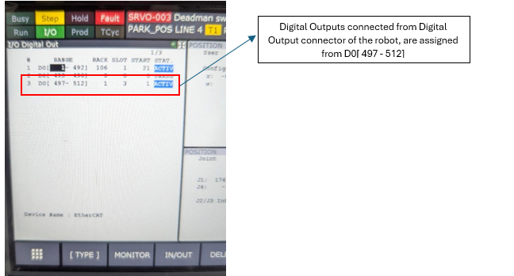
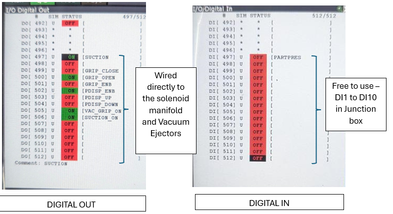

Use the IO outputs
wiring schematics Nov2024 + naming
…
IO’s on the robot arm

IO1 : on DO[4xx] → ejector signal 1
IO2 : on DO[4xx] → ejector signal 2
IO3 : input of part sensor → via IO3 (cabinet) → DI[4xx]
IO4 : … → … → DI[4xx]
|
Tip
|
A toggle signal in Fanuc is done like this: |
…
Access via teach pendant
ACCESSING DIGITAL IOS in robot: (For elaborate details refer FANUC ROBOT Bending Cell - Electrical components document in g drive)
-
The DI/DO’s can be accessed either manually from TP or used directly in robot program
-
To access manually –Press IO button on the tp>[type]>DIGITAL>press IN\OUT to toggle

Accessing Digital IO’s in Robot Program:
Accessing Digital IO’s in Robot Program:
-
To access the Digital IO’s in the Robot Program Open Program editor .

-
Insert lines where you want the digital IO’s to be positioned. And enter number of lines.

-
Now place curser in blank space, and select [INST], to open up the menu.

-
Select I/O to open the IO selection menu.
-
From the IO menu select DO[]=… to access the Digital Outputs.
-
Type In the assigned number at the blank spot in side the brackets ex: D0[500]=…

-
Move the curser to the blank after the ‘=’ sign, select [CHOICE] option to open the choice menu.
-
The options can be selected to manipulate the DO called.
-
The digital Output for the above mentioned wiring details are assigned from
DO[497]-DO[512], i.e,
DO0 = DO[497]
DO1 = DO[498]
..
…
DO11= DO[507]

-
Now the Digital Inputs can be accessed the same way. The inputs are also configured the same way.
-
The digital Input for the above mentioned wiring details are assigned from DI[497]-DI[512], i.e,
DI0 = DI[497]
DI1 = DI[498]
..
…
DI11 = DI[512]
-
List of IO’s already configured.
